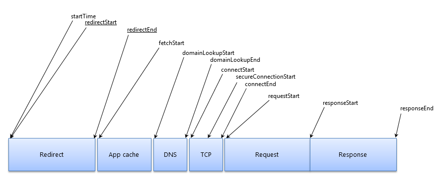

This specification defines an interface for web applications to access the complete timing information for resources in a document.
This is a work in progress and may change without any notices.
Please send comments to public-web-perf@w3.org (archived) with [ResourceTiming] at the start of the subject line.
Implementers SHOULD be aware that this document is not stable. Implementers who are not taking part in the discussions are likely to find the specification changing out from under them in incompatible ways. Vendors interested in implementing this document before it eventually reaches the Candidate Recommendation stage SHOULD join the aforementioned mailing lists and take part in the discussions.
User latency is an important quality benchmark for Web Applications. While JavaScript-based mechanisms can provide comprehensive instrumentation for user latency measurements within an application, in many cases, they are unable to provide a complete end-to-end latency picture. While Navigation Timing 2 [[navigation-timing-2]] addresses part of the problem by providing timing information associated with a navigation, this document introduces the ResourceTiming interface to allow JavaScript mechanisms to collect complete timing information related to resources on a document.
For example, the following JavaScript shows a simple attempt to measure the time it takes to fetch a resource:
<!doctype html>
<html>
<head>
</head>
<body onload="loadResources()">
<script>
function loadResources()
{
var start = new Date().getTime();
var image1 = new Image();
var resourceTiming = function() {
var now = new Date().getTime();
var latency = now - start;
alert("End to end resource fetch: " + latency);
};
image1.onload = resourceTiming;
image1.src = 'http://www.w3.org/Icons/w3c_main.png';
}
</script>
<img src="http://www.w3.org/Icons/w3c_home.png">
</body>
</html>
Though this script can measure the time it takes to fetch a resource, it cannot break down the time spent in various phases. Further, the script cannot easily measure the time it takes to fetch resources described in markup.
To address the need for complete information on user experience, this document introduces the PerformanceResourceTiming interface. This interface allows JavaScript mechanisms to provide complete client-side latency measurements within applications. With this interface, the previous example can be modified to measure a user's perceived load time of a resource.
The following script calculates the amount of time it takes to fetch every resource in the page, even those defined in markup. This example assumes that this page is hosted on http://www.w3.org. One could further measure the amount of time it takes in every phase of fetching a resource with the PerformanceResourceTiming interface.
<!doctype html>
<html>
<head>
</head>
<body onload="loadResources()">
<script>
function loadResources()
{
var image1 = new Image();
image1.onload = resourceTiming;
image1.src = 'http://www.w3.org/Icons/w3c_main.png';
}
function resourceTiming()
{
var resourceList = window.performance.getEntriesByType("resource");
for (i = 0; i < resourceList.length; i++)
{
if (resourceList[i].initiatorType == "img")
{
alert("End to end resource fetch: "+ resourceList[i].responseEnd - resourceList[i].startTime);
}
}
}
</script>
<img id="image0" src="http://www.w3.org/Icons/w3c_home.png">
</body>
</html>
Requirements phrased in the imperative as part of algorithms (such as "strip any leading space characters" or "return false and abort these steps") are to be interpreted with the meaning of the key word ("MUST", "SHOULD", "MAY", etc) used in introducing the algorithm.
Some conformance requirements are phrased as requirements on attributes, methods or objects. Such requirements are to be interpreted as requirements on user agents.
Conformance requirements phrased as algorithms or specific steps may be implemented in any manner, so long as the end result is equivalent. (In particular, the algorithms defined in this specification are intended to be easy to follow, and not intended to be performant.)
The IDL fragments in this specification must be interpreted as required for conforming IDL fragments, as described in the Web IDL specification. [[!WebIDL]]
The construction "a Foo object", where Foo is actually an interface, is sometimes used instead of
the more accurate "an object implementing the interface Foo".
The term DOM is used to refer to the API set made available to scripts in
Web applications, and does not necessarily imply the existence of an actual
Document object or of any other Node objects as
defined in the DOM specification. [[DOM]]
A DOM attribute is said to be getting when its value is being retrieved (such as by author script), and is said to be setting when a new value is assigned to it.
The term "JavaScript" is used to refer to ECMA262, rather than the official term ECMAScript, since the term JavaScript is more widely known. [[ECMA-262]]
Throughout this work, all time values are measured in milliseconds since the start of navigation of the document. For example, the start of navigation of the document occurs at time 0. The term current time refers to the number of milliseconds since the start of navigation of the document until the current moment in time. This definition of time is based on the High Resolution Time specification [[HR-TIME]] and is different from the definition of time used in the Navigation Timing specification [[NAVIGATION-TIMING]], where time is measured in milliseconds since midnight of January 1, 1970 (UTC).
The PerformanceResourceTiming interface facilitates timing measurement of downloadable resources on the root page. For example, this interface is available for XMLHttpRequest objects [[XMLHttpRequest]], HTML elements [[HTML5]] such as iframe, img, script, object, embed, and link with the link type of stylesheet, and SVG elements [[SVG11]] such as svg.
The term "resource" is also used to refer to these elements in this work.
PerformanceResourceTiming InterfaceAll resources fetched by the current browsing context [[!HTML5]] MUST be included as PerformanceResourceTiming objects in the Performance Timeline of the current browsing context. Resources that are retrieved from relevant application caches or local resources MUST be included as PerformanceResourceTiming objects in the Performance Timeline [[!performance-timeline]].
The rest of this section is non-normative.
Examples:
src attribute of two HTML IMG elements,
the fetch of the resource initiated by the first HTML IMG element SHOULD
be included as a PerformanceResourceTiming object in the Performance Timeline.
The user agent might not re-request the URL for the second HTML IMG element, instead using the existing download it initiated for the first HTML IMG element.
In this case, the fetch of the resource by the first
IMG element would be the only occurrence in the Performance Timeline.
src attribute of a HTML IMG element is changed via script, both the fetch of the original resource as well
as the fetch of the new URL would be included as PerformanceResourceTiming objects in
the Performance Timeline.
IFRAME element is added via markup without specifying a src attribute, the user agent may load the about:blank document for the IFRAME. If at a later time the src attribute is changed dynamically via script, the user agent may
fetch the new URL resource for the IFRAME. In this case, only the
fetch of the new URL would be included
as a PerformanceResourceTiming object in the Performance Timeline.
XMLHttpRequest is generated twice for the same canonical URL, both fetches of the resource would be
included as a PerformanceResourceTiming object in the Performance Timeline.
This is because the fetch of the resource for the second XMLHttpRequest cannot reuse the download issued for the first XMLHttpRequest.
IFRAME element is included on the page, then only the resource requested by IFRAME src attribute is included
as a PerformanceResourceTiming object in the Performance Timeline.
Sub-resources requested by the IFRAME document will be included in the IFRAME document's Performance Timeline and not the parent
document's Performance Timeline.
IMG element has a data: URI as its source [[!RFC2397]], then this resource will not
be included as a PerformanceResourceTiming object in the Performance Timeline.
By definition data: URI contains embedded data and does not require a fetch.
The user agent MAY choose to limit how many resources are included as
PerformanceResourceTiming objects in the Performance Timeline.
The recommended minimum number of PerformanceResourceTiming objects is 150, though this may be changed by the user agent.
setResourceTimingBufferSize
can be called to request a change to this limit.
PerformanceResourceTiming InterfaceThe PerformanceResourceTiming interface participates in the Performance Timeline and extends the following attributes of the PerformanceEntry interface:
nameentryTypeentryType attribute MUST return the DOMString "resource".startTimestartTime attribute MUST return a DOMHighResTimeStamp [[!HR-TIME]]
with the time immediately before the user agent starts to queue the resource for fetching.
If there are HTTP redirects or equivalent
when fetching the resource, and if all the redirects or equivalent are from the same origin as the current
document or the timing allow check algorithm passes, this attribute MUST return the same value as redirectStart.
Otherwise, this attribute MUST return the same value as fetchStart.durationduration attribute MUST return a DOMHighResTimeStamp
equal to the difference between responseEnd and startTime, respectively.If the initiator is an element, on getting, the initiatorType attribute MUST return a DOMString with the same value as the localName of that
element [[!DOM]].
If the initiator is a CSS resource downloaded by the url() syntax [[!CSS-SYNTAX-3]], such as @import url() or background: url(),
on getting, the initiatorType attribute MUST return the DOMString "css".
If the initiator is an XMLHttpRequest object [[!XMLHttpRequest]], on getting, the initiatorType attribute MUST return the DOMString "xmlhttprequest".
This attribute MUST return the network protocol used to fetch the resource, as identified by the ALPN Protocol ID [[!RFC7301]]. When a proxy is configured, if a tunnel connection is established then this attribute MUST return the ALPN Protocol ID of the tunneled protocol, otherwise it MUST return the ALPN Protocol ID of the first hop to the proxy.
In order to have precisely one way to represent any ALPN protocol ID, the following additional constraints apply: octets in the ALPN protocol MUST NOT be percent-encoded if they are valid token characters except "%", and when using percent-encoding, uppercase hex digits MUST be used.
Note that this attribute is intended to identify the network protocol in use for the fetch regardless of how it was actually negotiated; that is, even if ALPN is not used to negotiate the network protocol, this attribute still uses the ALPN Protocol ID's to indicate the protocol in use.
If there are HTTP redirects or equivalent when fetching the resource and if all the redirects or equivalent are from the same origin as the current document, this attribute MUST return the starting time of the fetch that initiates the redirect.
If there are HTTP redirects or equivalent when fetching the resource and if any of the redirects are not from the same origin as the current document, but the timing allow check algorithm passes for each redirected resource, this attribute MUST return the starting time of the fetch that initiates the redirect. Otherwise, this attribute MUST return zero.
If there are HTTP redirects or equivalent when fetching the resource and if all the redirects or equivalent are from the same origin as the current document, this attribute MUST return the time immediately after receiving the last byte of the response of the last redirect.
If there are HTTP redirects or equivalent when fetching the resource and if any of the redirects are not from the same origin as the current document, but the timing allow check algorithm passes for each redirected resource, this attribute MUST return the time immediately after receiving the last byte of the response of the last redirect. Otherwise, this attribute MUST return zero.
If there are no HTTP redirects or equivalent, this attribute MUST return the time immediately before the user agent starts to fetch the resource.
If there are HTTP redirects or equivalent, this attribute MUST return the time immediately before the user agent starts to fetch the final resource in the redirection.
This attribute MUST return the time immediately before the user agent starts the domain name lookup for the resource. If a persistent connection [[!RFC7230]] is used or the resource is retrieved from relevant application caches or local resources, this attribute MUST return the same value as fetchStart.
If the last non-redirected fetch of the resource is not the same origin as the current document, domainLookupStart MUST return zero unless the timing allow check algorithm passes.
This attribute MUST return the time immediately after the user agent finishes the domain name lookup for the resource. If a persistent connection [[!RFC7230]] is used or the resource is retrieved from relevant application caches or local resources, this attribute MUST return the same value as fetchStart.
If the user agent has the domain information in cache, domainLookupStart and domainLookupEnd represent the times when the user agent starts and ends the domain data retrieval from the cache.
If the last non-redirected fetch of the resource is not the same origin as the current document, domainLookupEnd MUST return zero unless the timing allow check algorithm passes.
This attribute MUST return the time immediately before the user agent start establishing the connection to the server to retrieve the resource. If a persistent connection [[!RFC7230]] is used or the resource is retrieved from relevant application caches or local resources, this attribute MUST return value of domainLookupEnd.
If the last non-redirected fetch of the resource is not the same origin as the current document, connectStart MUST return zero unless timing allow check algorithm passes.
This attribute MUST return the time immediately after the user agent finishes establishing the connection to the server to retrieve the resource. If a persistent connection [[!RFC7230]] is used or the resource is retrieved from relevant application caches or local resources, this attribute MUST return the value of domainLookupEnd.
If the transport connection fails and the user agent reopens a connection, connectStart and connectEnd SHOULD return the corresponding values of the new connection.
connectEnd MUST include the time interval to establish the transport connection, as well as other time intervals such as SSL handshake and SOCKS authentication.
If the last non-redirected fetch of the resource is not the same origin as the current document, connectEnd MUST return zero unless the timing allow check algorithm passes.
This attribute is optional. User agents that don't have this attribute available MUST set it as undefined. When this attribute is available and a secure trasnport is used, this attribute MUST return the time immediately before the user agent starts the handshake process to secure the current connection. If the secureConnectionStart attribute is available but a secure transport is not used, this attribute MUST return zero.
If the last non-redirected fetch of the resource is not the same origin as the current document, secureConnectionStart MUST return zero unless the timing allow check algorithm passes.
This attribute MUST return the time immediately before the user agent starts requesting the resource from the server, or from relevant application caches or from local resources.
If the transport connection fails after a request is sent and the user agent reopens a connection and resend the request, requestStart MUST return the corresponding values of the new request.
If the last non-redirected fetch of the resource is not the same origin as the current document, requestStart MUST return zero unless the timing allow check algorithm passes.
This attribute MUST return the time immediately after the user agent receives the first byte of the response from the server, or from relevant application caches or from local resources.
If the last non-redirected fetch of the resource is not the same origin as the current document, responseStart MUST return zero unless the timing allow check algorithm passes.
This attribute MUST return the time immediately after the user agent finishes receiving the last byte of the resource from relevant application caches or from local resources.
This attribute MUST return the size, in octets received by the client, consumed by the response header fields and the response payload body [[!RFC7230]].
This attribute SHOULD include HTTP overhead (such as HTTP/1.1 chunked encoding and whitespace around header fields, including newlines, and HTTP/2 frame overhead, along with other server-to-client frames on the same stream), but SHOULD NOT include lower-layer protocol overhead (such as TLS or TCP). If there are HTTP redirects or equivalent when navigating and if all the redirects or equivalent are from the same origin [[!RFC6454]], this attribute SHOULD include the HTTP overhead of incurred redirects.
This attribute MUST return the size, in octets received by the client, of the payload body [[!RFC7230]], prior to removing any applied content-codings [[!RFC7231]].
This attribute MUST return the size, in octets received by the client, of the message body [[!RFC7230]], after removing any applied content-codings [[!RFC7231]].
Performance InterfaceThe method clearResourceTimings clears the buffer used to store the current
list of PerformanceResourceTiming resources.
The setResourceTimingBufferSize method, when invoked, MUST set the maximum number of PerformanceResourceTiming resources that may be stored in
the buffer to the value of the maxSize parameter. The buffer is considered to be full if the number of entries in it is greater than or equal to maxSize.
If this method is not called, the user agent SHOULD store at least 150 PerformanceResourceTiming resources in the buffer, unless otherwise specified by the user agent.
If the maxSize parameter is less than the number of elements currently stored in the buffer, no elements in the buffer are to be removed and the user agent MUST NOT fire the resourcetimingbufferfull event.
The maxSize parameter sets the maximum number of PerformanceResourceTiming resources that will be stored in the buffer.
The event handler for the resourcetimingbufferfull event. Immediately after the buffer used to store the list of PerformanceResourceTiming
resources becomes full, the User Agent MUST fire a simple event named resourcetimingbufferfull that bubbles, isn't cancelable, has no default action, at the
Performance object.
Cross-origin resources MUST be included as PerformanceResourceTiming objects in the Performance Timeline. If the timing allow check algorithm fails for a cross-origin resource, these attributes of its PerformanceResourceTiming object MUST be set to zero: redirectStart, redirectEnd, domainLookupStart, domainLookupEnd, connectStart, connectEnd, requestStart, responseStart and secureConnectionStart, if supported by the user agent.
The term cross-origin is used to mean non same origin.
Server-side applications may return the Timing-Allow-Origin HTTP response header
to allow the User Agent to fully expose, to the document origin(s) specified, the
values of attributes that would have been zero due to the cross-origin
restrictions previously specified in this section.
Timing-Allow-Origin Response HeaderTiming-Allow-OriginThe header indicates whether a resource's timing can be shared based by returning the value of the Origin request header in the response.
ABNF:
Timing-Allow-Origin = "Timing-Allow-Origin" ":" origin-list-or-null | "*"
The timing allow check algorithm, which checks whether a cross-origin resource's timing information can be shared with the current document, is as follows:
If the HTTP response includes zero or more than one
Timing-Allow-Origin
header values, return fail and terminate this algorithm.
If the
Timing-Allow-Origin
header value is the "*" character, return pass and terminate this
algorithm.
If the value of
Timing-Allow-Origin
is not a case-sensitive match for the value of the
origin of the current document, return fail and terminate this algorithm.
Return pass.
The above algorithm also functions when the
ASCII serialization of an origin is
the string "null". Typically, this is the case when there are multiple redirects and the initiator is an XMLHttpRequest object.
In practice the
origin-list-or-null production is
more constrained. Rather than allowing a space-separated list of
origins, it is either a
single origin or the string
"null".
Vendor-specific proprietary user agent extensions are discouraged. If such extensions are needed, e.g., for experimental purposes, vendors MUST use the following extension mechanisms:
If an extension to the initiatorType IDL attribute return value is needed for an experimental initiator type, on getting the initiatorType IDL attribute, vendors MUST return a DOMString that uses the following convention:
[vendorprefix]-[name]
Where,
[vendorprefix] is a non-capitalized name that identifies the vendor,[name] is a non-capitalized name given to the initiator type,If the extension is a new timing attribute, it MUST:
The following graph illustrates the timing attributes defined by the PerformanceResourceTiming interface. Attributes underlined may not be available when fetching resources from different origins. User agents may perform internal processing in between timings, which allow for non-normative intervals between timings.

setResourceTimingBufferSize method.
resource.
When persistent connection [[!RFC7230]] is enabled, a user agent may first try to re-use an open connect to send the request while the connection can be asynchronously closed. In such case, connectStart, connectEnd and requestStart SHOULD represent timing information collected over the re-open connection.
resourcetimingbufferfull event at the Document.
clearResourceTimings method is called in the event handler for the resourcetimingbufferfull event,
clear all PerformanceResourceTiming objects in the primary buffer.
setResourceTimingBufferSize method is called in the event handler for the resourcetimingbufferfull event,
set the maximum size of the primary buffer to the maxSize parameter. If the maxSize parameter is less than the number of elements currently stored in the buffer, no elements in the buffer are to be removed.
The value of the timing attributes MUST monotonically increase to ensure timing attributes are not skewed by adjustments to the system clock while fetching the resource. The difference between any two chronologically recorded timing attributes MUST never be negative. For all resources, including subdocument resources, the user agent MUST record the system clock at the beginning of the root document navigation and define subsequent timing attributes in terms of a monotonic clock measuring time elapsed from the beginning of the navigation.
The PerformanceResourceTiming interface exposes timing information for a resource to any web page that has included that resource. To limit the access to the PerformanceResourceTiming interface, the same origin policy is enforced by default and certain attributes are set to zero, as described in . Resource providers can explicitly allow all timing information to be collected for a resource by adding the Timing-Allow-Origin HTTP response header, which specifies the domains that are allowed to access the timing information.
Statistical fingerprinting is a privacy concern where a malicious web site may determine whether a user has visited a third-party web site by measuring the timing of cache hits and misses of resources in the third-party web site. Though the PerformanceResourceTiming interface gives timing information for resources in a document, the cross-origin restrictions prevent making this privacy concern any worse than it is today using the load event on resources to measure timing to determine cache hits and misses.
We would like to sincerely thank Karen Anderson, Darin Fisher, Tony Gentilcore, Nic Jansma, Kyle Scholz, Jonas Sicking, James Simonsen, Steve Souders, Annie Sullivan, Sigbjørn Vik, Jason Weber to acknowledge their contributions to this work.